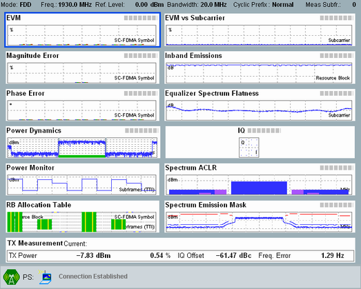

While an established connection is available, the UL signals from the UE can be monitored using the LTE multi-evaluation measurement (included in option R&S CMW-KM500).
To ensure compatible measurement settings, the measurement must be coupled to the LTE signaling application. For this purpose, the measurement provides a combined signal path scenario. With this scenario, the measurement application uses the most important settings of the signaling application, for example the RF settings.
Proceed as follows:
Use the "LTE TX Meas" softkey to switch to the multi-evaluation measurement.
The measurement application is opened and the combined signal path scenario is selected automatically. Furthermore the frame trigger signal provided by the "LTE Signaling" application is selected as trigger source.
Press "ON | OFF" to start the measurement.
The main view provides an overview of the measurement results.

To enlarge a diagram, perform one of the following actions:
|